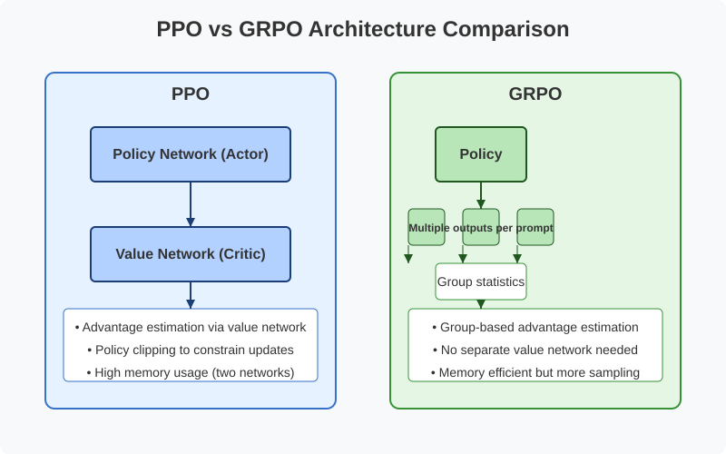
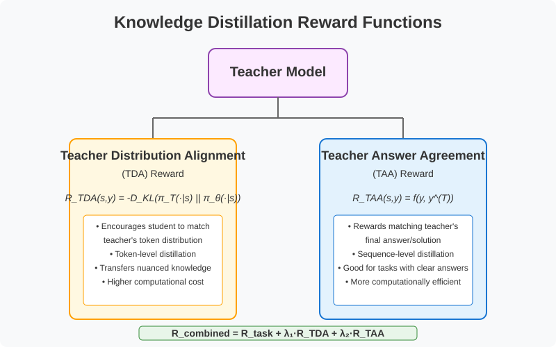
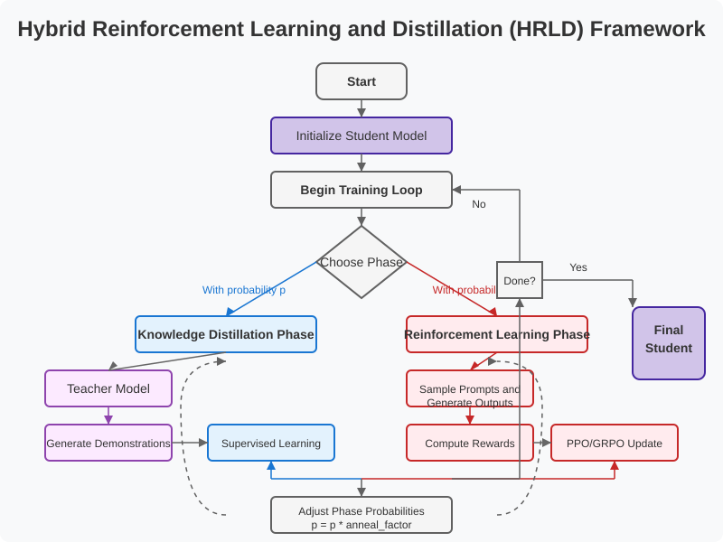

Enhancing LLM Fine-tuning with Knowledge Distillation
DA-PPO, DA-GRPO, and HRLD Approaches
PPO vs GRPO Architecture Comparison

PPO vs GRPO: Summary
This graphic illustrates the fundamental architectural differences between PPO and GRPO for LLM fine-tuning:
PPO (Proximal Policy Optimization):
Uses two separate networks: policy (actor) and value (critic).
Value network estimates advantages for policy updates.
Requires significant memory but provides stable learning.
GRPO (Group Relative Policy Optimization):
Eliminates the separate value network, using only a policy network.
Generates multiple outputs (group sampling) per prompt.
Computes advantages based on relative rewards within the group (mean/std).
More memory efficient, but requires more sampling per step.
Key Innovation: GRPO replaces the critic network with group-based advantage calculation, suitable for large models where duplicating the network is costly.
Knowledge Distillation Reward Functions

Knowledge Distillation Rewards: Summary
Two novel reward functions proposed for integrating teacher knowledge:
Teacher Distribution Alignment (TDA) Reward:
Measures divergence between student and teacher output distributions (KL divergence).
Acts at the token level: R_TDA = -D_KL(π_T || π_θ)
Student generates G-1 outputs, Teacher generates 1 output per prompt.
These G outputs form a response group.
Rewards computed for all outputs (including teacher's).
Group statistics (mean, std) calculated for reward normalization.
Relative advantages computed using normalized reward differences.
Teacher provides token distributions for KL calculation.
Total loss combines: GRPO loss, Teacher KL term, Reference KL term.
Student parameters updated.
Key Innovation: Including the teacher's output directly in the group baseline calculation forces the student to compete with/match the teacher's performance.
Hybrid RL and Distillation (HRLD)

HRLD Framework: Summary
Presents HRLD's interleaved two-phase training approach:
Statistical significance testing applied across domains for robust results.
Ensures algorithms generalize well beyond narrow tasks.
Conclusion
DA-PPO, DA-GRPO, and HRLD represent a comprehensive suite of approaches for enhancing LLM fine-tuning with knowledge distillation.
By leveraging teacher model expertise (via distribution matching, answer agreement, or direct inclusion in training), they aim to produce more capable student models.
The goal is to maintain performance across multiple domains while optimizing for human preferences or task-specific rewards, effectively transferring knowledge from a stronger teacher model.
The multi-domain evaluation framework ensures rigorous testing of generalization capabilities.